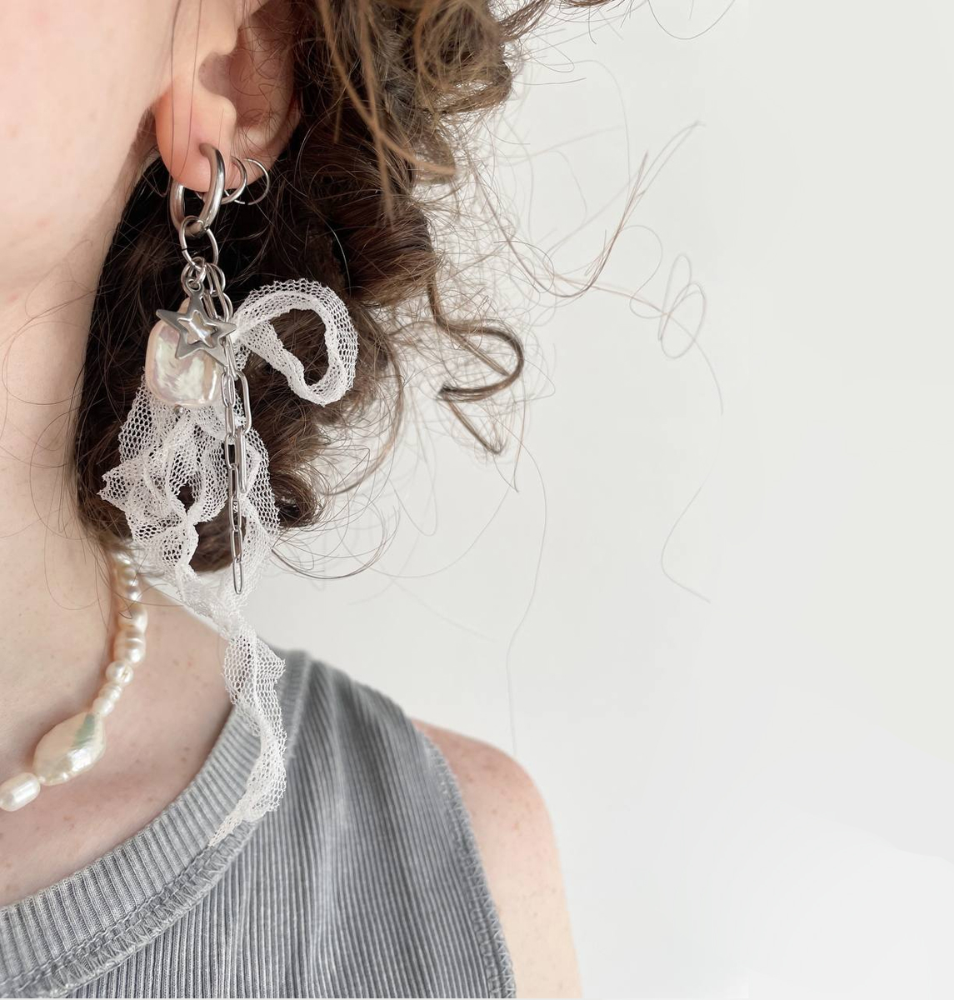
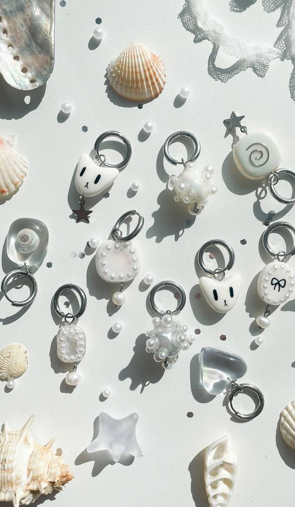
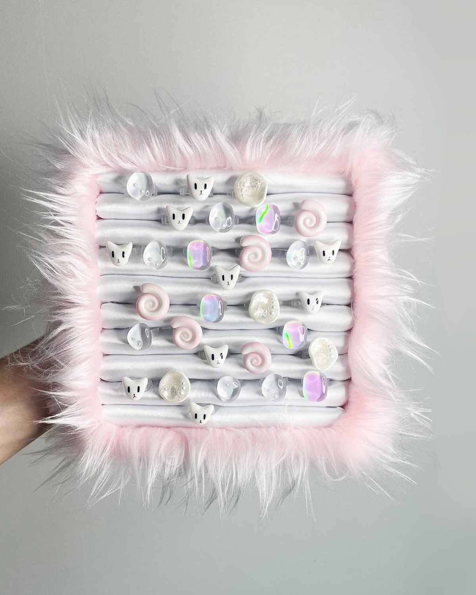

 Gem Luxe родился из желания создать уникальные, авторские украшения, которые подчеркивают индивидуальность и стиль каждого. Мы искали способ объединить искусство и роскошь, предложив изделия, которые выходят за рамки массового производства. Каждое украшение Gem Luxe — это ручная работа, воплощение творчества и внимания к деталям, созданное для тех, кто ценит эксклюзивность.
Открытие магазина Gem Luxe стало воплощением нашей мечты о месте, где встречаются искусство и элегантность. Мы хотим предложить покупателям не просто украшения, а уникальные произведения искусства, которые отражают их личность. В нашем магазине вы найдете только эксклюзивные изделия, созданные с любовью и вниманием к каждой детали.
Сегодня Knitting Nook - это не просто магазин, а целое сообщество творческих людей. Анна и ее команда постоянно работают над созданием новых коллекций, вдохновляясь природой, культурой и традициями разных стран. Каждая вещь, будь то уютный свитер, теплый шарф или стильный аксессуар, изготавливается вручную с использованием только высококачественных материалов. Анна гордится тем, что ее бренд поддерживает местных мастеров и помогает сохранять традиции ручного труда.
 Наша цель — создавать украшения, которые становятся неотъемлемой частью вашего стиля и самовыражения. Мы стремимся предложить изделия, которые не только красивы, но и уникальны, чтобы каждый клиент мог найти что-то, что идеально подчеркивает его личность. Gem Luxe — это бренд, который приносит в мир больше красоты и изысканности.